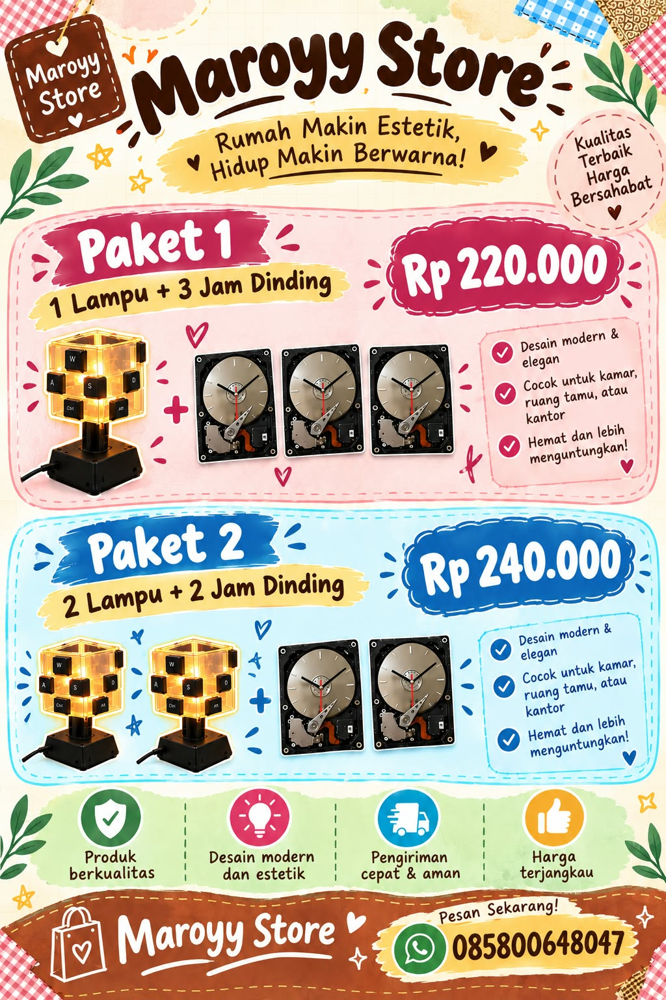
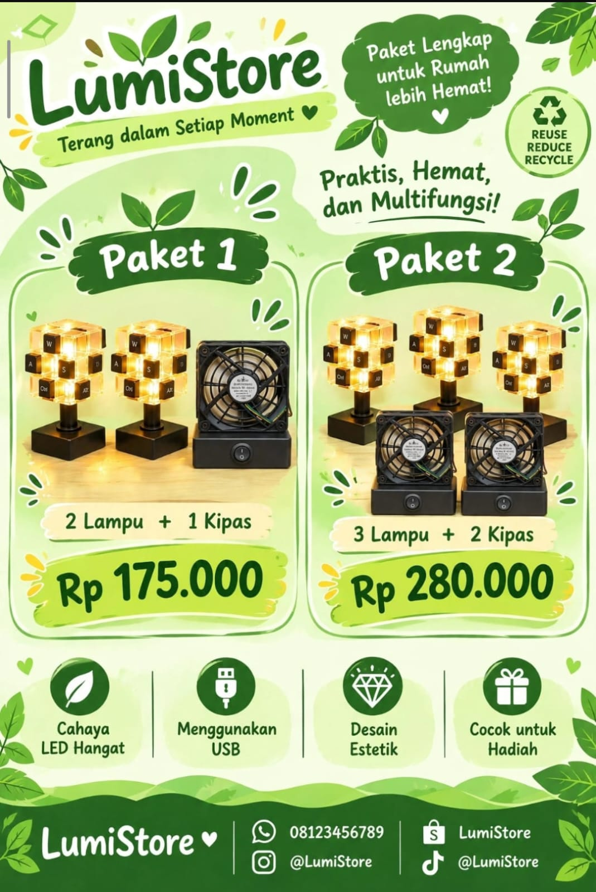
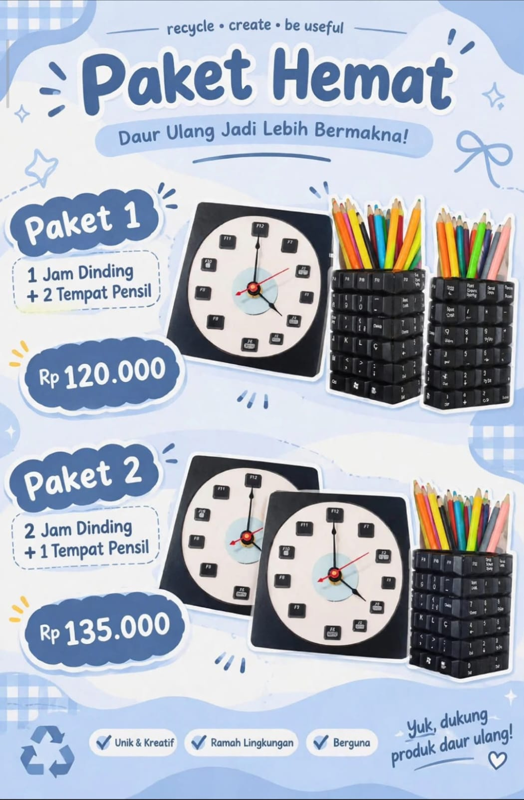

Mata Pelajaran Kolaborasi
Mata pelajaran yang saling berkolaborasi dalam proyek Give Waste A Second Life
Matematika
Mendesain iklan bundling produk daur ulang kolaboratif Matematika

Tampilkan perhitungan
Permisalan
x = harga 1 lampu hias
y = harga 1 jam HDD
Permodelan
x+3y=220.000
2x+2y=240.000
Penyelesaian
Eliminasi
x+3y=220.000(x2)
2x+2y=240.000(x1)
2x+6y=440.000
2x+2y=240.000(-1)
4y=200.000
y=50.000
Subsitusi
x+3(50.000)=220.000
x+150.000=220.000
x=220.000-150.000
x=70.000
Hasil:
x=70.000, y=50.000
1 Lampu Hias Rp.70.000 dan 1 Jam HDD Rp.50.000

Tampilkan perhitungan
Permisalan
x = harga 1 kipas portabel
y = harga 1 lampu hias
Permodelan
x+2y=175.000
2x+y=280.000
Penyelesaian
Eliminasi
x+2y=175.000(x2)
2x+3y=280.000(x1)
2x+4y=350.000
2x+3y=280.000
y=70.000
Subsitusi
x+2(70.000)=175.000
x+140.000=175.000
x=175.000-140.000
x=35.000
Hasil:
x=35.000, y=70.000
1 Kipas Portabel Rp.35.000 dan 1 Lampu Hias Rp.70.000

Tampilkan perhitungan
Permisalan
x= harga 1 jam dinding
y= harga 1 tempat pensil
Permodelan
x+2y=120.000
2x+y=135.000
Penyelesaian
Eliminasi
x+2y=120.000(x2)
2x+y=135.000(x1)
2x+4y=240.000
2x+y=135.000(-)
3y=105.000
y=35.000
Subsitusi
x+2(35.000)=120.000
x+70.000=120.000
x=120.000-70.000
x=50.000
Hasil:
x=50.000, y=35.000
1 Jam Dinding Rp.50.000 dan 1 Tempat Pensil Rp.35.000
Bahasa Indonesia
Menulis teks laporan hasil observasi secara logis dan sistematis
Laporan observasi Mario Azura Kurniawan
Pengolahan Limbah Komponen Komputer Bekas
elektronik merupakan sisa perangkat elektronik yang sudah tidak digunakan atau mengalami kerusakan. Salah satu contohnya adalah keyboard komputer bekas. Jika tidak dikelola dengan baik, limbah elektronik dapat menumpuk dan mencemari lingkungan. Oleh karena itu, diperlukan kreativitas untuk memanfaatkan kembali barang bekas menjadi produk yang berguna.
satu bentuk pemanfaatan limbah elektronik adalah mengubah keyboard bekas menjadi lampu hias. Produk ini dibuat dengan memanfaatkan bagian keyboard sebagai bahan dekorasi yang memiliki tampilan unik. Proses pembuatannya dimulai dengan membersihkan keyboard, menyusun bagian-bagiannya, kemudian memasang komponen pencahayaan dengan memperhatikan keamanan.
Lampu hias dari keyboard bekas memiliki beberapa manfaat, yaitu mengurangi limbah elektronik, meningkatkan kreativitas, dan menghasilkan produk yang memiliki nilai jual. Produk ini juga menerapkan prinsip 3R, khususnya Reuse, karena memanfaatkan kembali barang yang sudah tidak digunakan menjadi benda baru yang lebih bermanfaat.
Berdasarkan hasil observasi, lampu hias dari keyboard bekas merupakan salah satu inovasi kreatif dalam mengatasi permasalahan limbah elektronik. Produk ini membuktikan bahwa barang bekas masih dapat dimanfaatkan menjadi sesuatu yang menarik dan bernilai ekonomi. Dengan menerapkan prinsip 3R, kita dapat ikut menjaga kebersihan dan kelestarian lingkungan.
Laporan observasi Olivia Ayunda Putri
Pengolahan Limbah Keyboard Bekas
Limbah elektronik merupakan sisa barang elektronik yang sudah tidak digunakan atau mengalami kerusakan. Salah satu contohnya adalah keyboard komputer bekas. Keyboard yang sudah tidak berfungsi sering kali dibuang dan menjadi sampah elektronik. Padahal, beberapa bagian keyboard masih dapat dimanfaatkan menjadi barang baru. Salah satu bentuk pemanfaatannya adalah dengan mengolah limbah keyboard bekas menjadi produk Keylight, yaitu lampu hias kreatif yang menggunakan komponen keyboard sebagai bahan dekorasinya.
Proses pembuatan Keylight diawali dengan mengumpulkan keyboard bekas yang sudah tidak digunakan. Keyboard tersebut kemudian dibongkar untuk mengambil bagian-bagian yang masih bisa dimanfaatkan, seperti tombol-tombol dan bagian casing. Selanjutnya, komponen yang telah dipilih dibersihkan agar terbebas dari debu dan kotoran.Setelah bahan siap, tombol-tombol keyboard disusun sesuai pola dan desain yang telah direncanakan. Bagian tersebut kemudian dirangkai dengan bahan tambahan sebagai kerangka produk. Selanjutnya, dipasang komponen lampu sebagai sumber pencahayaan. Setelah seluruh bagian terpasang, dilakukan pemeriksaan untuk memastikan Keylight dapat berfungsi dengan baik dan memiliki tampilan yang menarik.
Hasil dari pengolahan limbah keyboard bekas ini adalah produk Keylight yang dapat digunakan sebagai lampu hias atau penerangan tambahan. Produk ini memiliki ciri khas berupa penggunaan tombol-tombol keyboard yang memberikan kesan unik dan modern.Selain menghasilkan produk yang bermanfaat, pengolahan ini juga memberikan dampak positif bagi lingkungan. Limbah keyboard yang sebelumnya tidak terpakai dapat dimanfaatkan kembali sehingga jumlah sampah elektronik dapat dikurangi. Kegiatan ini juga melatih kreativitas, keterampilan, dan kemampuan berinovasi dalam menciptakan produk dari barang bekas.
Pengolahan limbah keyboard bekas menjadi Keylight merupakan salah satu bentuk kreativitas dalam memanfaatkan barang yang sudah tidak terpakai. Melalui proses pengolahan yang tepat, limbah elektronik dapat diubah menjadi produk yang memiliki fungsi, keindahan, dan nilai ekonomi. Oleh karena itu, pemanfaatan limbah keyboard bekas menjadi Keylight dapat menjadi salah satu alternatif untuk mengurangi sampah elektronik sekaligus meningkatkan kepedulian terhadap lingkungan.
Laporan observasi Viorentina Putri Aprilia
Pengolahan Limbah Keyboard Bekas
komponen komputer bekas merupakan salah satu jenis sampah elektronik yang sudah tidak digunakan. Salah satu contohnya adalah keyboard komputer bekas. Jika tidak dikelola dengan baik, limbah tersebut dapat menumpuk dan mencemari lingkungan. Oleh karena itu, diperlukan upaya untuk memanfaatkan kembali barang bekas menjadi produk yang berguna.
satu bentuk pemanfaatan limbah elektronik adalah mengolah keyboard bekas menjadi lampu hias atau keylight. Produk ini dibuat dengan memanfaatkan tombol-tombol keyboard sebagai bahan utama dekorasi. Proses pembuatannya dilakukan dengan membersihkan keyboard, memilih tombol yang masih layak digunakan, kemudian menyusun dan menggabungkannya dengan lampu serta bahan pendukung lainnya hingga menjadi produk lampu hias yang menarik.
keyboard bekas menjadi lampu hias memiliki beberapa manfaat, yaitu mengurangi jumlah sampah elektronik, menghemat penggunaan bahan baku, meningkatkan kreativitas, dan menghasilkan produk yang memiliki nilai guna. Kegiatan ini juga menerapkan prinsip 3R, yaitu Reduce dengan mengurangi sampah elektronik, Reuse dengan menggunakan kembali tombol keyboard yang masih layak, dan Recycle dengan mengolah keyboard bekas menjadi produk baru.
Berdasarkan hasil observasi, pengolahan limbah keyboard bekas menjadi lampu hias merupakan salah satu bentuk pemanfaatan barang bekas yang kreatif dan bermanfaat. Produk ini membuktikan bahwa limbah elektronik masih dapat diolah menjadi barang yang menarik dan memiliki nilai ekonomi. Dengan menerapkan prinsip 3R, kita dapat mengurangi pencemaran lingkungan sekaligus meningkatkan kreativitas dalam memanfaatkan barang bekas.
Bahasa Inggris
Menulis text report secara logis dan sistematis.
Text Report Mario Azzura Kurniawan
Processing of Used Computer Component Waste
Electronic waste is one of the environmental problems caused by technological development. Many electronic devices, such as keyboards and computers, are no longer used and become waste. If not managed properly, electronic waste can harm the environment. Therefore, reusing old electronic materials is a good solution.
A decorative lamp made from a used keyboard is an example of a creative product. The used keyboard is cleaned and its parts are arranged into a unique decoration. After that, a lighting component is installed carefully to create a functional and attractive lamp.
This product has several benefits. It helps reduce electronic waste, develops creativity, and creates economic value. It also applies the 3R principle, especially Reuse, by turning unused materials into useful products.
In conclusion, a decorative lamp made from a used keyboard is a creative way to reuse electronic waste. It shows that old electronic materials can become useful and valuable products. By applying the 3R principle, we can help protect the environment and create a cleaner future.
Text Report Olivia Ayunda Putri
Processing of Used Computer Component Waste
Electronic waste is discarded electronic equipment that is no longer used or has been damaged. One example is a used computer keyboard. Keyboards that no longer function are often thrown away and become electronic waste. However, some parts of keyboards can still be reused to create new products. One way to reuse them is by processing used keyboard waste into a Keylight product, which is a creative decorative lamp that uses keyboard components as its decoration.
The process of making Keylight begins with collecting used keyboards that are no longer in use. The keyboards are then disassembled to take useful parts, such as the keys and the casing. After that, the selected components are cleaned to remove dust and dirt. Once the materials are ready, the keyboard keys are arranged according to the planned pattern and design. The parts are then assembled with additional materials to form the product's frame. Next, a lighting component is installed as the source of illumination. After all the parts have been assembled, the product is checked to ensure that the Keylight works properly and has an attractive appearance.
The result of processing used keyboard waste is a Keylight product that can be used as a decorative lamp or additional lighting. This product has a unique characteristic because it uses keyboard keys as decorations, giving it a modern and creative appearance. Besides producing a useful product, this recycling activity also has a positive impact on the environment. Previously unused keyboard waste can be reused, helping reduce the amount of electronic waste. This activity also develops creativity, skills, and innovation in creating products from recycled materials.
Processing used keyboard waste into Keylight is a form of creativity in reusing unused materials. Through proper processing, electronic waste can be transformed into a product that has practical functions, aesthetic value, and economic potential. Therefore, turning used keyboards into Keylight products can be an alternative way to reduce electronic waste while increasing environmental awareness.
Text Report Viorentina Putri Aprilia
Processing Used Computer Component Waste
Used computer components are electronic waste that comes from devices that are no longer used or have been damaged. Examples include cables, fans, keyboards, mice, motherboards, and CPU cases. If not managed properly, electronic waste can pollute the environment. Therefore, proper waste management is important to protect the environment.
Used computer components can be reused and processed into useful products. Components that are still in good condition can be used again, while damaged components can be recycled into new products. This process helps reduce the amount of electronic waste.
There are three methods of processing electronic waste based on the 3R principles. Reduce means reducing the use of unnecessary electronic products. Reuse means using components that are still in good condition. Recycle means processing used components into new products. These methods provide several benefits, such as reducing environmental pollution, saving raw materials, improving creativity, and producing useful items.
In conclusion, used computer components can be managed through the 3R principles (Reduce, Reuse, and Recycle). These methods help reduce electronic waste, save resources, and protect the environment. By reusing and recycling old computer components, we can turn waste into something more useful.